Projects RT-9000D Discuss on GitHub
Restoration / HF Repaired, baseline next
Sunair RT-9000D
back to life
A dead professional HF transceiver, six hours on the bench, and a fault that turned out to be a single switch contact, now replaced. The radio came as a set with its automatic coupler and, later, a kilowatt amplifier, all of it a few months outdoors before it reached me. This is the first entry: getting it to turn on, what the bench says so far, and a first look inside the amplifier.
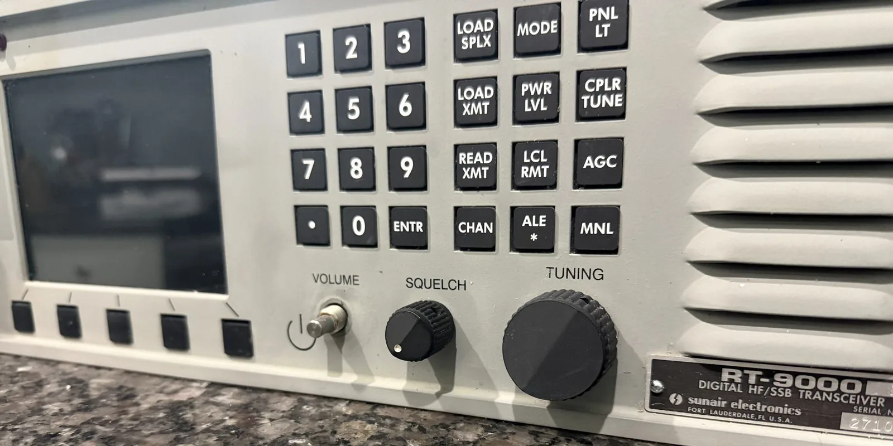
- Radio
- Sunair RT-9000D, Fort Lauderdale
- Coverage
- 1.6 to 30 MHz, 125 W SSB, 128 channels, ALE ready
- Supply
- 28 V DC at up to 20 A, or 115/230 V AC internal
- Companions
- CU-9125 automatic coupler, LPA-9600 1 kW amplifier
- Fault
- Open power switch on the volume control, replaced with a NOS part
- Manual
- RT-9000B schematics, matching the D so far
The radio
The Sunair RT-9000 is a 125 W, 1.6 to 30 MHz HF/SSB transceiver built in Fort Lauderdale for government, maritime and embassy service. Mine is a D model: color display, 128 channels, ALE ready, and the same 49 lb of aluminum and modular boards as the B and C before it. It came as a set with a CU-9125 automatic antenna coupler and, later, an LPA-9600 kilowatt amplifier, all of which had spent a few months outdoors before I got them.
The radio runs on 28 VDC at up to 20 A, or on 115/230 VAC through its own internal supply. Neither cord came with it, so the first job was connectors: an MS3106A18-1S for the AC input (115 V is pins A and G hot, C and E neutral, J ground) and an MS3106A16-11S for the DC input. With a bench supply on the DC jack, the radio did nothing. No display, no LEDs, no click.
Following the power
On AC there was a low hum from the rear of the chassis and nothing else, which said the AC supply's transformer was alive and the problem was downstream. The manual I have is for the Bravo, the RT-9000B, and so far its schematics have matched this D model board for board, connector for connector and signal for signal; nothing in the design or in the troubleshooting has needed anything the B drawings do not show. They made the path clear: everything in the radio turns on when the DC switching regulator board, 1A5A1A1, closes its main relay K1, and K1 is told to close by a ground on the ON/OFF line that comes from the front panel.
From there it was half-split bracketing, the same way I was taught to work a dead set: find the middle of the path between the thing that works and the thing that does not, prove that point good or bad, and you have thrown away half the circuit. Then split what is left. The first split was the regulator board. +12 V was present, the relay coil had voltage on one side and no return on the other, and the ON/OFF line that should have been grounded by the front panel switch was floating. Everything upstream of that line was fine; everything downstream was waiting for it. The next split was the front panel wiring versus the switch itself, and the switch lost.
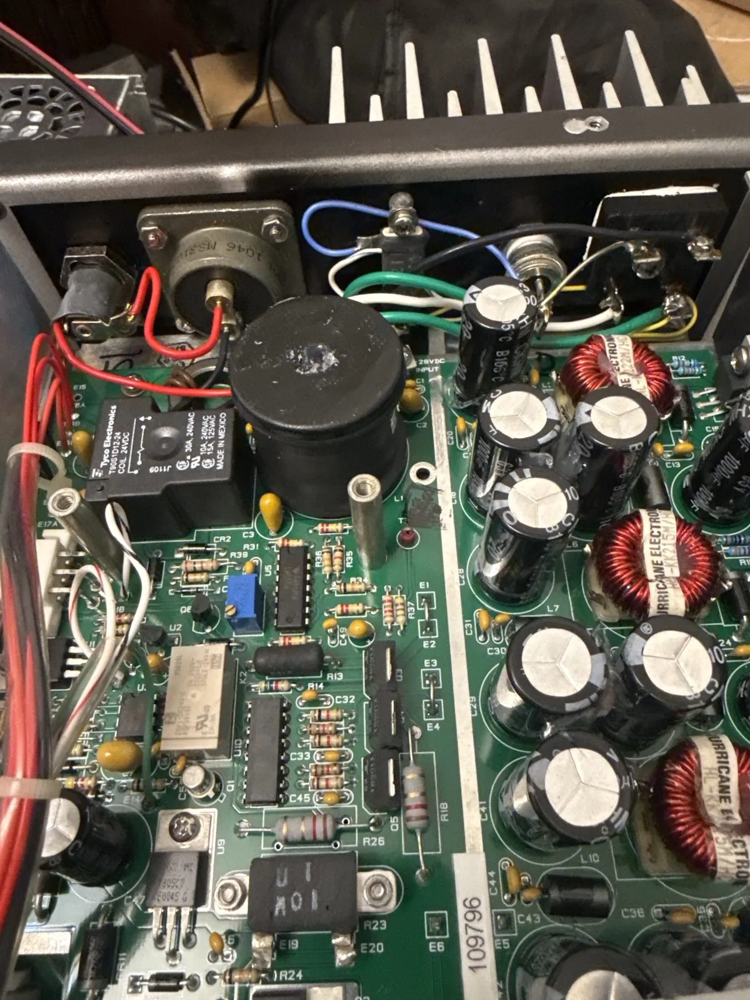
The ON/OFF line ends at the switch on the back of the volume control. It read open in both positions. The identical switch on the squelch control, the same CTS Type GC part, read correctly, which ruled out the meter and the method. A jumper across the volume switch terminals and the radio lit up, found its last channel, and went to receive.
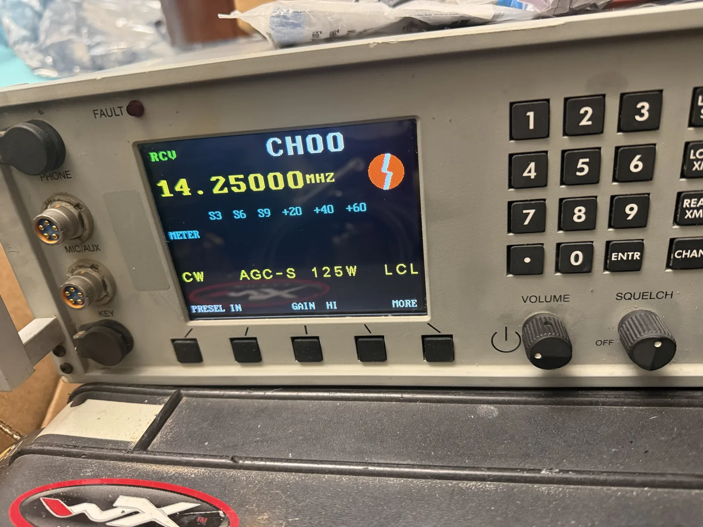
Six hours went into getting to that one open contact, most of it in learning the radio. A new-old-stock pot bought online has since gone in and the jumper is out. The squelch pot is the same part and would have served as a stopgap.
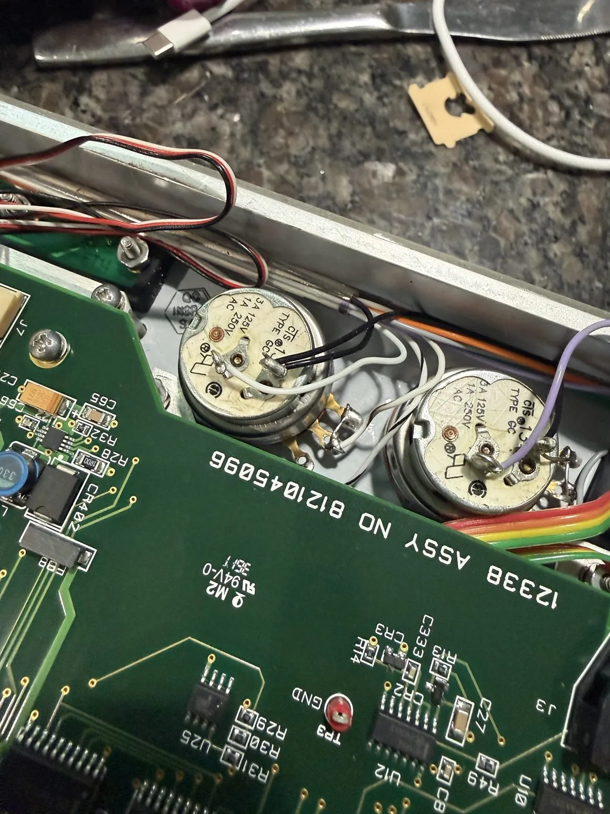
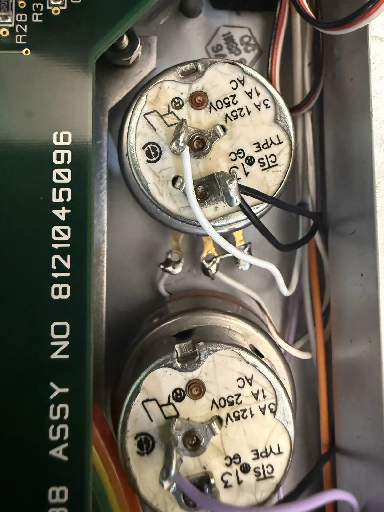
Switched potentiometer, 25 kΩ linear with an SPST switch, 3 A at 125 VAC. The can is marked CTS Type GC; the new-old-stock replacement is a PEC KSU2531R24. The 3 A rating on the can is the contact rating; in this radio the switch only handles the logic-level ON/OFF line.
Built like a URC-94
Six hours inside this radio kept sending me back to the URC-94, which I spent years operating, maintaining and repairing. They are different generations from different companies, and the Sunair feels like it came out of the same school. Every circuit is over-engineered in the way that military and commercial HF gear used to be: margin in the parts, margin in the heatsinking, nothing run near its limit. The power supply is the clearest example. Lay the RT-9000's switching regulator and its relay-gated turn-on next to the URC-94's supply and the design philosophy is the same even though not one part is shared: a regulated bus, a single point that enables everything, and protection that fails the radio off rather than letting it cook.
The compartmentalization is the same too. Each function is its own board in its own bay with its own reference designator, 1A5A1A1 for the regulator and so on, so a fault lives in one place and the schematics tell you which bay to open. Every bay is a shielded box, every cable between bays is screened or filtered, and the EMI and RFI control is built into the chassis rather than bolted on afterwards. That is what makes half-split bracketing fast on a radio like this: the design already draws the brackets for you.
Put it next to an Icom or a Yaesu and it is a different kind of object. The amateur radios are excellent at what they are built for, and they are built to a price and a weight. The Sunair is built to keep working for twenty years in an embassy basement and to be fixed by someone with a manual and a meter. Opening it up is the same wow I had the first time inside a URC-94.
What the bench says so far
On 26 V the radio receives well and transmits SSB. Full 125 W key-down wants 27 to 28 V, since the PA current limit sits at 17 A and the margin disappears as the voltage drops. The spec is 28 V plus or minus 15 percent, and a 28 V, 20 A supply is the right source. The coupler needs its own 37-pin control cable from the radio's J6, which is a project of its own and gets its own page.
Numbers, not impressions
Powering up is a milestone, not a measurement. The RT-9000D goes on the IFR 2947 next for receiver sensitivity and line audio level, frequency accuracy, transmitter output on each band with two-tone IMD and harmonic content, and keying and ALC behavior through the rear J5 line audio interface.
To make that repeatable I am building a small interface box between the radio and the 2947: a switched attenuator for mic and line level injection, PTT keying, a load for the receive audio, and a DB-25 radio port wired to the RT-9000's J5 pin map so the same cable serves the test box, a remote head, or a modem later. The drawings are below; the build and the test procedure follow once the box is on the bench.
Drawing K4DIA-2947-001, rev C
Radio test interface box
Five sheets
B size, 2026-11-06
One box between the IFR 2947 and whatever radio is under test. Two all-metal BNCs take the generator out and the AF input; a DB-25 on the other end plate takes one adapter cable at a time, wired to the RT-9000's J5 pin order so the same port serves the rear J5, the front U-229 jacks, or an IC-7100. S1 pads the generator to line, mic or aux level, S2 and S3 key the radio, S4 selects a speaker load. RF never passes through it. Sheet 1 is the schematic, 2 the list of materials, 3 the pad board, 4 the enclosure drilling, 5 the adapter cables and the bench arrangement.

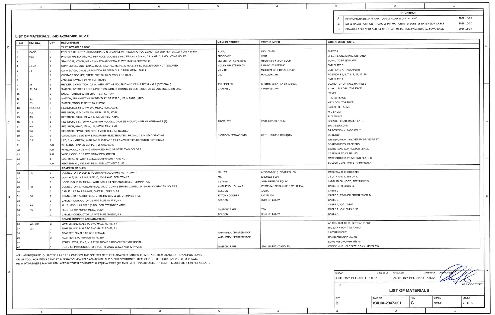
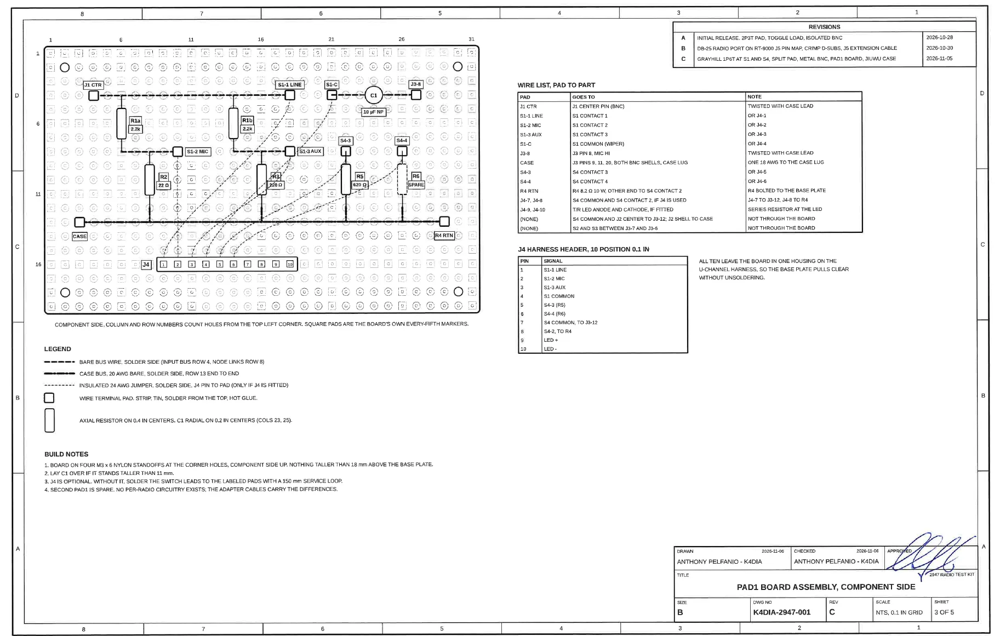
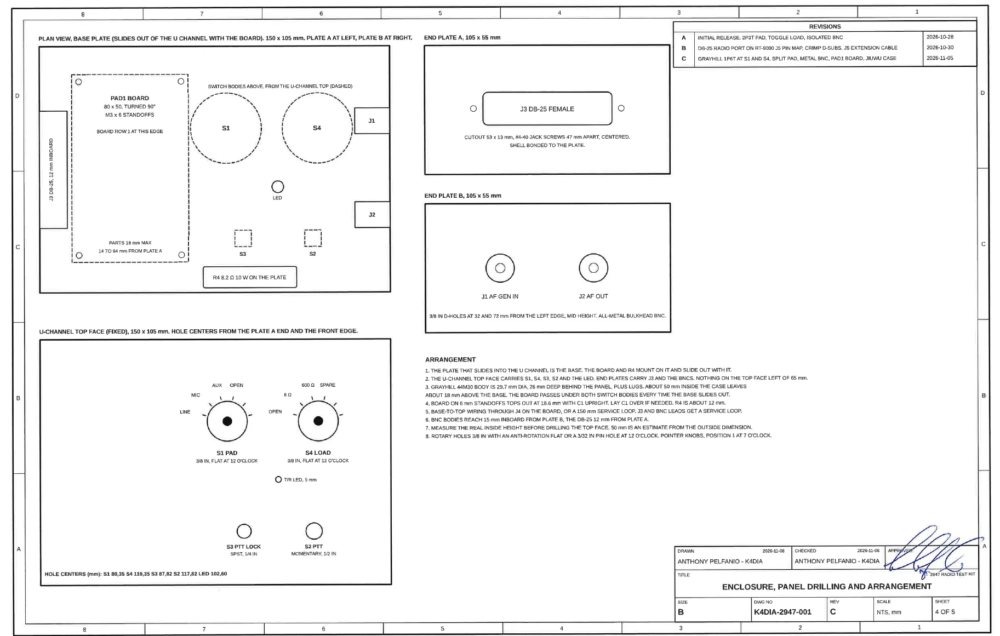
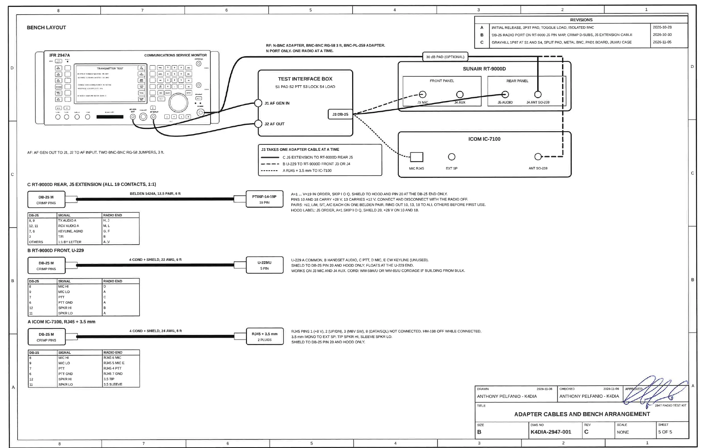
-
K4DIA-2947-001 rev C, full set
Schematic, list of materials, board, enclosure and cables, B size landscape, as drawn.
Download
The amplifier
The companion unit is an LPA-9600, Sunair's 1 kW solid-state amplifier: four 250 W RF decks on 48 V supplies, combined into a nine-band relay-switched low-pass filter bank, driven by the radio's 125 W. It is strapped for 115 VAC and pulls about 30 A at full key-down, so it gets a dedicated circuit before it gets keyed.
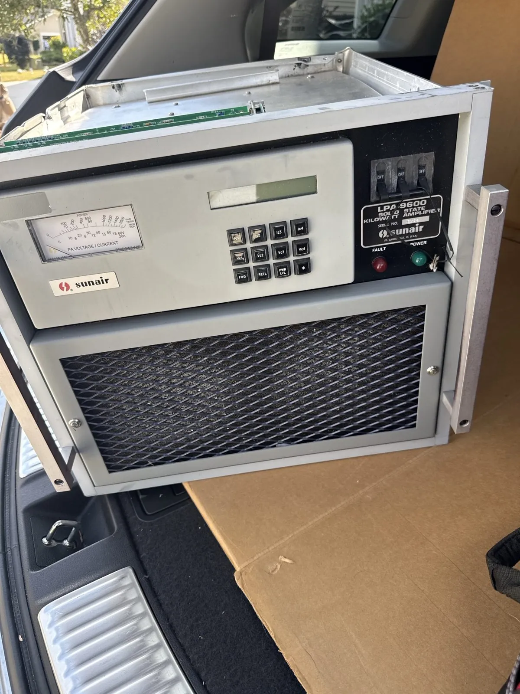
Inside, the filter bank is immaculate and the RF decks are dirty but intact: no corrosion, no heat damage, all four decks populated. It gets a cleaning and a dry-out before the breaker goes on, then a module-by-module check on its own meter.
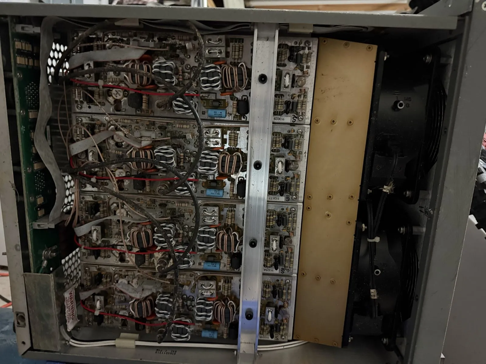
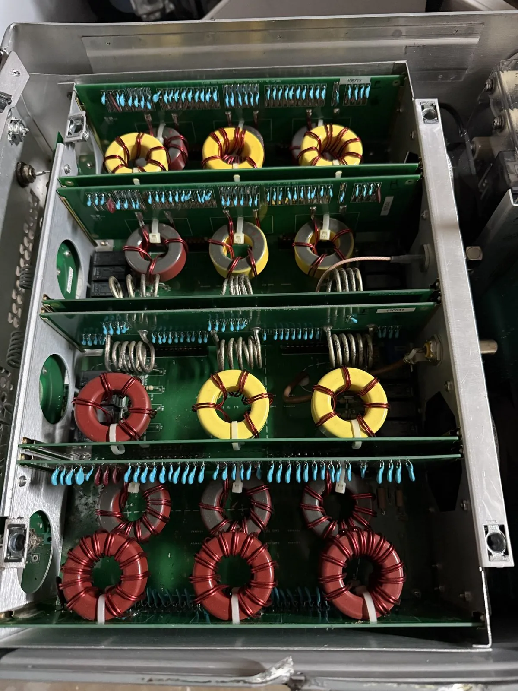
Still to come
What goes up next
- The test interface box built, the three adapter cables made, and the test procedure.
- A measured baseline for the radio: sensitivity, frequency accuracy, output per band, two-tone IMD, harmonics.
- The LPA-9600 after its dry-out: each deck on its own meter before the breaker goes on.
- The 37-pin control cable from J6 to the CU-9125 coupler.
What six hours on this radio taught me: trace the enable path before the power path, because this radio had power everywhere and was only missing permission; a matching part elsewhere in the same chassis is the fastest meter check there is; and military and commercial gear that lived outside usually comes back. Dry it, inspect it, then power it.
Questions, results, corrections
Discuss this project on GitHub
Built one, measured something different, or found a mistake? The conversation for every page on this site lives in GitHub Discussions, where it stays with the files. A GitHub account is all it takes. Sign with your callsign.